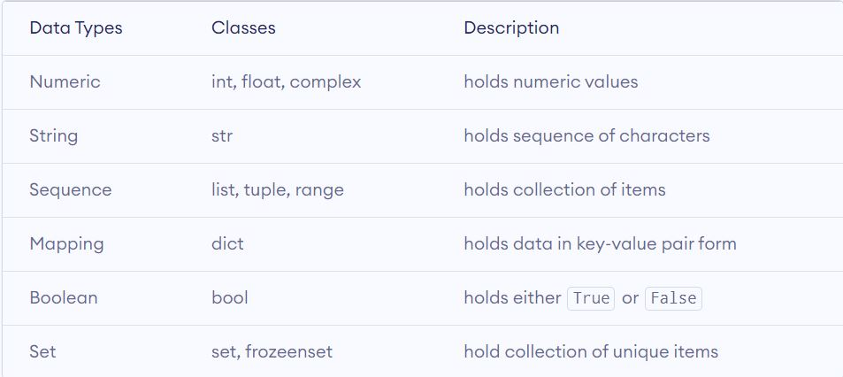
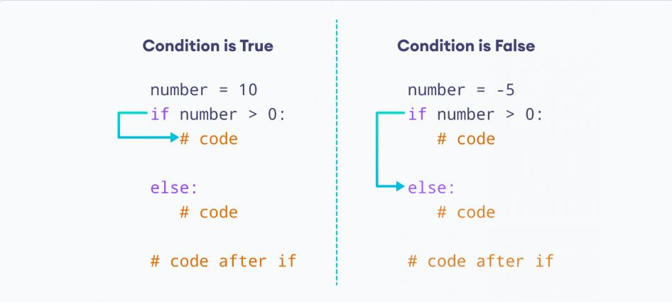

Langages de programmation
ce site est sous forme d'une documentation du Chapitre 4 : Langages de programmation est crée par Zakaria taki & Hassan oudrar
Prérequis
- Notions d’algorithmes
- Constantes, variables et types
- Instructions de base (lecture, écriture, affectation)
- Structure de contrôle de base
Initiation python
Python est un langage de programmation multiplateforme, ce qui signifie qu'il peut s'exécuter sur plusieurs plates-formes telles que Windows, macOS, Linux, et a même été porté sur les machines virtuelles Java et .NET. Il est gratuit et open-source.
Même si la plupart des Linux et Mac d'aujourd'hui ont Python pré-installé, la version peut être obsolète. C'est donc toujours une bonne idée d'installer la version la plus récente.
Comment Installer python?
Le moyen le plus simple d'exécuter Python consiste à utiliser vscode IDE pour l'edition de votre code maitenant vous devez installez python depuis le site officiel localement.
vscode est fourni avec la dernière version de Python. Vous n'avez donc pas besoin d'installer Python séparément.
Suivez les étapes suivantes pour exécuter Python sur votre ordinateur :
- Télécharger vscode
- Exécutez le programme d'installation pour installer vscode sur votre ordinateur.
- Allez dans : Fichier > Nouveau. Enregistrez ensuite le fichier avec l'extension .py. Par exemple, bonjour.py, exemple.py, etc.
- Vous pouvez donner n'importe quel nom au fichier. Cependant, le nom du fichier doit se terminer par .py
aprés vous allez chercher une extention qui s'appelle python crée par microsoft et l'installé Votre premier programme Python Maintenant que Python est opérationnel, nous pouvons écrire notre premier programme Python.
Créons un programme très simple appelé Hello World. Un "Bonjour, le monde!" est un programme simple qui affiche Hello, World! sur l'écran. Comme il s'agit d'un programme très simple, il est souvent utilisé pour présenter un nouveau langage de programmation aux débutants.
Tapez le code suivant dans n'importe quel éditeur de texte ou un IDE et enregistrez-le sous hello_world.py
print("hello world")
Variables, constantes, affectation en Python
En programmation, une variable est un conteneur (zone de stockage) pour contenir des données. Par exemple :
nombre = 10
Ici, nombre est la variable stockant la valeur 10. Comme nous pouvons le voir dans l'exemple ci-dessus, nous utilisons l'opérateur d'affectation = pour affecter une valeur à une variable.
# affecter zakaria taki à la variable zakaria taki
nom = 'zakaria taki'
print(nom)
# sortie: zakaria taki
changer la valeur d'une variable
# affecter zakaria taki à la variable zakaria taki
nom = 'zakaria taki'
print(nom)
# sortie: zakaria taki
nom = 'hassan oudrar'
print(nom)
# sortie: hassan oudrar
les constants de python Une constante est un type spécial de variable dont la valeur ne peut pas être modifiée.
En Python, les constantes sont généralement déclarées et affectées dans un module (un nouveau fichier contenant des variables, des fonctions, etc. qui est importé dans le fichier principal).
Voyons comment nous déclarons des constantes dans un fichier séparé et les utilisons dans le fichier principal,
Créez un constant.py :
# declare constants
PI = 3.14
GRAVITY = 9.8
Créez un main.py :
# import constant file we created above
import constant
print(constant.PI) # prints 3.14
print(constant.GRAVITY) # prints 9.8
Dans l'exemple ci-dessus, nous avons créé le fichier de module constant.py. Ensuite, nous avons attribué la valeur constante à PI et GRAVITY.
Après cela, nous créons le fichier main.py et importons le module constant. Enfin, nous avons imprimé la valeur constante.
Types de données en python
Dans ce didacticiel, vous découvrirez différents types de données que nous pouvons utiliser en Python à l'aide d'exemples.
En programmation informatique, les types de données spécifient le type de données pouvant être stockées dans une variable. Par exemple:
num = 24
Ici, 24 (un entier) est affecté à la variable num. Ainsi, le type de données de nombre est de la classe int. voila un tableau qui decrit les différents types de données : 
Instructions de base (lecture, écriture) en python:
la sortie en python::
En Python, nous pouvons simplement utiliser la fonction print() pour imprimer la sortie. Par exemple:
print('python est trés fort')
# Sortie: python est trés fort
Ici, la fonction print() affiche la chaîne entre guillemets simples. Syntaxe de print() Dans le code ci-dessus, la fonction print() prend un seul paramètre. Cependant, la syntaxe réelle de la fonction d'impression accepte 5 paramètres
l'entrée en python::
# on utilise la fonction input pour prendre l'age de l'utilisateur:
num = input('quel est ton age ? : ')
print('ton age est :', num)
# Sortie: 10
print('le type de num est :', type(num))
# Sortie: int
Dans l'exemple ci-dessus, nous avons utilisé la fonction input () pour prendre l'entrée de l'utilisateur et stocké l'entrée de l'utilisateur dans la variable num.
Il est important de noter que la valeur saisie 10 est une chaîne et non un nombre. Ainsi, type(num) renvoie
Pour convertir l'entrée de l'utilisateur en un nombre, nous pouvons utiliser les fonctions int() ou float() comme :
Structure de contrôle de base en python
En programmation informatique, nous utilisons l'instruction if pour exécuter un code de bloc uniquement lorsqu'une certaine condition est remplie.
Par exemple, attribuer des notes (A, B, C) en fonction des notes obtenues par un élève.
- si le pourcentage est supérieur à 90, attribuez la note A
- si le pourcentage est supérieur à 75, attribuez la note B
- si le pourcentage est supérieur à 65, attribuez la note C
En Python, on va voir ensemble deux type de conditions :
- if déclaration
- instruction if...else
The syntax of if statement in Python is: 1. Python si instruction La syntaxe de l'instruction if en Python est :
if condition:
# ici ton logique
L'instruction if évalue la condition.
Si la condition est évaluée à True, le code à l'intérieur du corps de if est exécuté. Si la condition est évaluée à False, le code à l'intérieur du corps de if est ignoré.
 Exemple 1 : instruction Python if
number = 10
# on teste si le nombre est superier a 0
if number > 0:
print('le nombre est positive')
print ('facile')
#sortie : le nombre est positive facile
Dans l'exemple ci-dessus, nous avons créé une variable nommée number. Remarquez la condition de test,
number > 0:
Ici, étant donné que le nombre est supérieur à 0, la condition évalue True. Si nous changeons la valeur de la variable en un entier négatif. Disons -5.
number = -5
Maintenant, lorsque nous exécutons le programme, la sortie sera :
#sortie : facile
Cela est dû au fait que la valeur de nombre est inférieure à 0. Par conséquent, la condition prend la valeur False. Et, le corps du bloc if est ignoré.
2-instruction if...else
Une instruction if peut avoir une clause else facultative. La syntaxe de l'instruction if...else est :
if condition:
# bloc d'instruction si la condition est vraie
else:
# bloc d'instruction si la condition est fausse
L'instruction if...else évalue la condition donnée :
Si la condition est évaluée à True,
le code à l'intérieur si est exécuté le code à l'intérieur d'autre est ignoré Si la condition est évaluée à Faux,
le code à l'intérieur d'autre est exécuté le code à l'intérieur si est ignoré
EXEMPLE:
number = 10
if number > 0:
print('nombre Positive')
else:
print('Negative ')
print('cette fonction est toujours executée')
ce programme nous sortira 'nombre positive' si number est superieur à 0 sinon il sortira negative dans l'autre cas et la derniere instruction est toujours executée. car il est en dehors du bloc if en respecant la notion de L'indentation
L'indentation fait référence aux espaces au début d'une ligne de code.
Alors que dans d'autres langages de programmation, l'indentation dans le code sert uniquement à la lisibilité, l'indentation dans Python est très importante. Python utilise l'indentation pour indiquer un bloc de code.
Exercice de python
Exercice 1: l'age: Écrire un programme en Python qui de demande à l'utilisateur son age et l'afficher en ecran
Exercice 2: calcul de calories: Écrire un programme en Python qui calcule combien de calories qui correspond à un poids , demander à l'utilisateur son poids
Exercice 3: le carré d'un nombre: Écrire un programme en Python qui calcule le carré d'un nombre
Exercice 4: la surface d'un triangle: Écrire un programme en Python qui calcule la surface d'un triangle
Exercice 4: la mention de l'élève: Écrire un programme en Python qui renvoie le mention de l'élève selon sa note
- si 10 < note < 12 --> passable
- si 12 < note < 14 --> assez bien
- si 14 < note < 16 --> bien
- si 16 < note < 20 --> T.bien